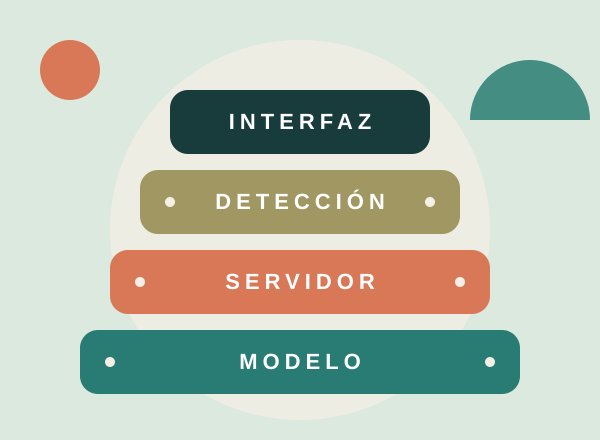
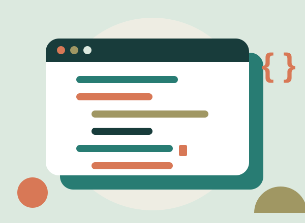

Cuando no hablamos el mismo idioma
La comunicación puede ser difícil cuando una persona no conoce la lengua de señas que utiliza otra persona. Esto puede generar barreras al momento de expresar ideas, necesidades o sentimientos. Por eso, con TRADCODE quiero desarrollar una herramienta que ayude a reconocer algunas señas y mostrar su significado en texto y voz, facilitando un poco la comunicación entre las personas.

Tecnologías utilizadas
Para desarrollar TRADCODE se utilizaron diferentes tecnologías. Cada una cumple una función dentro de la aplicación.
HTML, CSS y React
Organizan el contenido, dan estilo a la interfaz y presentan el traductor y las lecciones.
MediaPipe
Detecta los puntos de referencia de la mano a partir de la imagen de la cámara.
Python y FastAPI
Sirven la aplicación y guardan capturas de puntos cuando el usuario lo solicita.
GRU y ONNX Runtime Web
Clasifican secuencias de seis cuadros en el navegador. La edición híbrida reconoce 52 categorías entrenadas.

Sobre el desarrollo
TRADCODE es un proyecto desarrollado como parte de la asignatura de Desarrollo Web, con el propósito de poner en práctica los conocimientos adquiridos en la construcción de páginas web y la integración de diferentes tecnologías, como API, inteligencia artificial y Machine Learning. A través de este proyecto, se busca desarrollar una solución tecnológica a una problemática real, utilizando la programación y las herramientas web para facilitar la comunicación entre personas que utilizan la lengua de señas y aquellas que no la conocen.
Créditos
TRADCODE aporta la interfaz y el material de práctica. El motor utiliza MediaPipe, PyTorch y ONNX Runtime Web. La mano 3D utiliza Three.js y WebXR Input Profiles. Los datos de entrenamiento LSC70 son de Muñoz Galindez, Villota Coral y Vargas Cañas, bajo CC BY 4.0.
Créditos y licencias